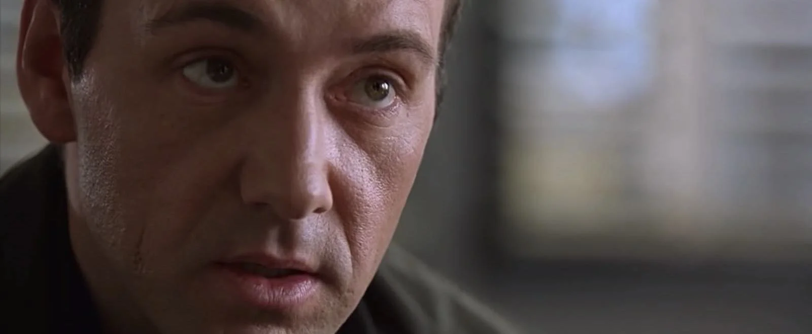

You know it’s time for a close-up shot when you want to reveal a subject’s emotions and reactions. The close-up camera shot fills your frame with a part of your subject. If your subject is a person, it is often their face. Here's an example of the close-up shot size:
Of all the different types of camera shot sizes in film, a close-up is perfect for important moments. The close-up shot size is near enough to register tiny emotions, but not so close that we lose visibility.
https://www.studiobinder.com/blog/ultimate-guide-to-camera-shots/